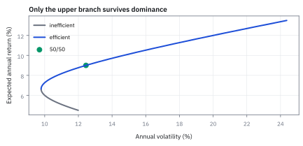
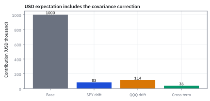

12.5 Markowitz Portfolio Selection
ผลตอบแทนเฉลี่ยตามน้ำหนักเป็นเส้นตรง แต่ความเสี่ยงไม่ใช่ ช่องว่างนี้ทำให้ส่วนผสมชนะสินทรัพย์ที่ดีที่สุดตัวเดียว และตัวคูณ Lagrange วาดเมนูของส่วนผสมทั้งหมดออกมาเป็นเส้นเดียว
แบบจำลองรายปีของบทนี้: หุ้นคาดหวัง 12% SD 20% พันธบัตรคาดหวัง 6% SD 10% correlation 0.30 เงินสดได้ 2% ผลตอบแทนส่วนเกินเงินสดต่อหน่วยความเสี่ยง (Sharpe ratio) ของหุ้นคือ 10%/20% = 0.50 ของพันธบัตรคือ 4%/10% = 0.40 ผู้จัดการกองทุนคนหนึ่งบอกว่าหุ้นคุ้มกว่าต่อหน่วยความเสี่ยง ใครอยากได้ Sharpe สูงสุดก็ควรถือหุ้นล้วน แล้วค่อยปรับระดับความเสี่ยงด้วยเงินสด ถูกไหม?
ลองตอบก่อนเปิดเฉลย
ไม่ถูก พอร์ตหุ้น 43.18% พันธบัตร 56.82% ได้ Sharpe 0.5645 สูงกว่าหุ้นล้วน แค่ย้ายหุ้น 5% ไปพันธบัตร Sharpe ก็ขึ้นเป็น 0.5064 แล้ว เพราะพันธบัตรที่ correlation กับหุ้นแค่ 0.30 หักความผันผวนได้มากกว่าผลตอบแทนที่เสียไป ส่วนกองทุนที่ต้องลงเงินครบและกลัวความเสี่ยงระดับ $\gamma=2$ ควรถือ 50/50 ซึ่งได้ Sharpe 0.5623 ใกล้ยอดมาก
สิ่งที่เราจะสร้าง
12.3 หาพอร์ตที่ดีที่สุดเมื่อมีเงินสดไม่จำกัด 12.4 ให้เครื่องมือ Lagrange สำหรับข้อบังคับ หน้านี้เอาสองอย่างมารวมกันเป็นโจทย์ของ Harry Markowitz: เลือกน้ำหนักให้ผลตอบแทนคาดหวังหักค่าปรับความเสี่ยงดีที่สุด เมื่อต้องลงเงินครบ 100%
เราจะกลับ covariance ด้วยมือ แก้โจทย์ด้วยตัวคูณหนึ่งตัว อ่านความหมายของมัน แยกคำตอบเป็นพอร์ตความเสี่ยงต่ำสุดบวกพอร์ตเก็งกำไรที่ปรับขนาดตาม $\gamma$ วาด efficient frontier ด้วยตัวคูณสองตัว หา tangency portfolio เมื่อมีเงินสด อธิบายว่าทำไมผสมตัวที่ Sharpe ต่ำกว่าแล้ว Sharpe รวมสูงขึ้น และจบที่จุดอ่อนใหญ่ที่สุด: คำตอบไวต่อผลตอบแทนคาดหวังที่ประมาณได้หยาบ
ศัพท์ที่ใช้ในหัวข้อนี้
- Mean-variance
- กรอบที่ให้รางวัลผลตอบแทนคาดหวังและหักค่าปรับ $\gamma$ คูณ variance ใช้เลือกพอร์ตตามระดับความกลัวความเสี่ยง
- Efficient frontier
- เส้นของพอร์ตที่ variance ต่ำสุดสำหรับผลตอบแทนเป้าหมายแต่ละระดับ เฉพาะครึ่งบน ใช้เป็นเมนูที่ตัดพอร์ตที่แพ้ทั้งสองมิติทิ้ง
- Global minimum variance (GMV)
- พอร์ตลงเงินครบที่ variance ต่ำที่สุด เป็นพอร์ตเดียวบนเส้นที่ไม่ต้องรู้ผลตอบแทนคาดหวังเลย
- Sharpe ratio
- ผลตอบแทนส่วนเกินเงินสดหารด้วย SD ใช้วัดว่าความเสี่ยงหนึ่งหน่วยแลกผลตอบแทนส่วนเกินได้เท่าไร
- Tangency portfolio
- ส่วนผสมของสินทรัพย์เสี่ยงที่ Sharpe สูงสุด เป็นจุดที่เส้นจากอัตราเงินสดแตะ frontier พอดี
- Two-fund separation
- ข้อเท็จจริงที่ว่าทุกพอร์ตบนเส้นสร้างได้จากสองพอร์ต ทำให้ทุกคนถือพอร์ตเสี่ยงหน้าตาเดียวกันต่างกันแค่ขนาด
สัญลักษณ์และหน่วย
| สัญลักษณ์ | ความหมาย | หน่วย |
|---|---|---|
| $x,\ \mathbf1$ | น้ำหนักหุ้นและพันธบัตร และ vector ของเลข 1 | สัดส่วนของ NAV |
| $\mu,\ V$ | ผลตอบแทนคาดหวังรายปี และ covariance รายปี (12.1) | return และ return² ต่อปี |
| $\gamma,\ J$ | ความกลัวความเสี่ยง และ objective $\mu^{\mathsf T}x-\gamma x^{\mathsf T}Vx$ | ต่อหน่วย variance และ return ต่อปี |
| $\nu$ | ตัวคูณของข้อบังคับลงเงินครบ | return ต่อปีต่อหน่วยงบ |
| $A,\ B,\ C,\ D$ | $\mathbf1^{\mathsf T}V^{-1}\mathbf1$, $\mathbf1^{\mathsf T}V^{-1}\mu$, $\mu^{\mathsf T}V^{-1}\mu$ และ $AC-B^2$ | 1/return², 1/return, ไม่มีหน่วย, 1/return² |
| $m,\ r_f$ | ผลตอบแทนเป้าหมายบน frontier และอัตราเงินสด 2% | return ต่อปี |
ขั้นที่ 1 — ตั้งโจทย์ และกลับ covariance ด้วยมือ
โจทย์คือหา $x$ ที่ทำให้ $\mu^{\mathsf T}x-\gamma x^{\mathsf T}Vx$ สูงสุด โดย $\mathbf1^{\mathsf T}x=1$ และติดลบได้ (short ได้) ทุกคำตอบในหน้านี้ผ่าน $V^{-1}$ จึงคำนวณมันก่อน inverse ของ 2×2 คือสลับทแยง เปลี่ยนเครื่องหมายนอกทแยง แล้วหารด้วย determinant (7.5)
ตัวเลขในตารางกลับใหญ่เพราะหารด้วย determinant ที่เล็ก 109.89 ไม่ได้แปลว่าพันธบัตรเสี่ยง 109 เท่า มันมีหน่วยเป็นหนึ่งส่วน variance ช่องใหญ่สุดตกกับตัวที่เงียบที่สุด เพราะ $V^{-1}$ ให้รางวัลกับความนิ่ง ตรวจครบทั้งสี่ช่องของ $VV^{-1}$ ได้ตาราง identity (โค้ดท้ายหน้าพิมพ์ให้)
ขั้นที่ 2 — Lagrangian ให้คำตอบทั่วไป แล้วงบเป็นตัวหา ν
ใช้สูตรของ 12.4 ติดราคา $\nu$ ให้ข้อบังคับลงเงินครบ หา derivative เทียบ $x$ ตั้งเป็นศูนย์ ย้ายข้าง แล้วคูณ $V^{-1}$ ทางซ้ายแทนการ “หารด้วย matrix”
บรรทัดที่สองใช้ gradient ของ 12.2 และ 12.3 บรรทัดที่สี่เอา $\mathbf1^{\mathsf T}$ คูณคำตอบ แล้วตั้งชื่อ $A=\mathbf1^{\mathsf T}V^{-1}\mathbf1$ และ $B=\mathbf1^{\mathsf T}V^{-1}\mu$ ซึ่งเป็นแค่ตัวเลขสองตัว ข้อบังคับจึงให้ $\nu$ ออกมาทันที ต่อไปนี้ทุกอย่างสร้างจาก $V^{-1}\mathbf1$ กับ $V^{-1}\mu$
ขั้นที่ 3 — γ = 2: ครึ่งต่อครึ่งพอดี
โจทย์ให้อะไรมาบ้าง: $\gamma=2$ จึง $2\gamma=4$ ใช้ $A$ กับ $B$ ของขั้นที่ 2 หา $\nu$ ก่อน หักออกจากผลตอบแทนคาดหวังทุกตัว แล้วคูณ $V^{-1}$
คำตอบ: หุ้นครึ่งพันธบัตรครึ่ง ผลตอบแทน 9.00% ความผันผวน 12.45% ค่าเป้าหมาย 0.059 ชนะถือตัวเดียว ซึ่งได้ $0.12-2(0.04)=0.04$ และ $0.06-2(0.01)=0.04$ เท่ากันพอดี ความโค้งของ $J$ คือ $-4V$ (12.3) คงที่และคว่ำทุกทิศ จุดนี้จึงเป็นยอดสูงสุดของทั้งเส้นลงเงินครบ
ตรวจเองใน 10 วินาที: $0.5+0.5=1$ ข้อบังคับที่ $\nu$ ถูกสร้างมาเพื่อบังคับ ถ้าผลรวมไม่ได้ 1 แปลว่าคำนวณ $\nu$ ผิด ไม่ใช่ $x$ ผิด ส่วน variance ต้องกางเต็ม: $0.25(0.04)+0.25(0.01)+2(0.25)(0.006)=0.0155$ ต่ำกว่าค่าเฉลี่ยของ 0.04 กับ 0.01 ที่ 0.025 มาก ผลตอบแทนเฉลี่ยเป็นเส้นตรง ความเสี่ยงไม่ใช่
ขั้นที่ 4 — ν = 2.8% คือราคาของงบ และติดลบได้
ตามขั้นที่ 5 ของ 12.4 ตัวคูณคืออัตราเปลี่ยนของค่าเป้าหมายที่ดีที่สุดต่องบ ทดสอบด้วยการแก้โจทย์ใหม่ที่งบ 101% ใช้สูตรเดิมแต่ $\nu=(B-2\gamma b)/A$
อัตรา 0.0278 อยู่ระหว่าง $\nu(1)=0.028$ กับ $\nu(1.01)=0.0276$ เพราะราคาเงาลดลงระหว่างที่เพิ่มงบ เหมือนที่ 12.4 เห็นกับทุนของเดสก์ อ่านเป็นภาษาโต๊ะ: ถ้าผ่อนให้ลงเงินได้ 101% ค่าเป้าหมายเพิ่มราว 2.8% ของเงินส่วนที่เพิ่ม
$\nu$ ของข้อบังคับแบบสมการติดลบได้ ที่ $\gamma=4$ ได้ $\nu=(6.9231-8)/104.3956\approx-0.0103$ แปลว่าคนที่กลัวมากขนาดนี้อยากลงเงินน้อยกว่า 100% ถ้าทำได้ ข้อบังคับกำลังบังคับให้เขาเสี่ยงเกินใจ ไม่ใช่ความผิดพลาดของการคำนวณ
ขั้นที่ 5 — แยกคำตอบ: พอร์ตความเสี่ยงต่ำสุด บวกพอร์ตเก็งกำไรที่ปรับขนาดด้วย γ
แทน $\nu=(B-2\gamma)/A$ กลับในคำตอบของขั้นที่ 2 แล้วจัดกลุ่มตามว่าพจน์ไหนมี $\gamma$ จะเห็นโครงของคำตอบทุก $\gamma$ พร้อมกัน
ก้อนแรกคือพอร์ตความเสี่ยงต่ำสุด (GMV) ของ 12.4 ไม่มี $\gamma$ และไม่มี $\mu$ ก้อนที่สอง $z$ มีผลรวมน้ำหนักเป็นศูนย์ ($\mathbf1^{\mathsf T}z=B-B=0$) คือพอร์ต long หุ้น short พันธบัตรที่ไม่ใช้เงิน ขนาดของมันคือ $1/(2\gamma)$ ยิ่งกลัว ยิ่งถือก้อนเก็งกำไรน้อย
ตรวจ: $\gamma=2$ ได้ $2/19+7.5/19=0.5$ ตรงกับขั้นที่ 3 $\gamma=1$ ได้หุ้น 89.47% ผลตอบแทน 11.37% SD 18.24% $\gamma=4$ ได้หุ้น 30.26% ผลตอบแทน 7.82% SD 10.52% และเมื่อ $\gamma$ โตไม่หยุด เหลือ GMV หุ้น 10.53% SD 9.787% ผลตอบแทน $B/A\approx6.63\%$
Figure 12.5a — ความกลัวความเสี่ยงย้ายเงินจากหุ้นไปพันธบัตร

ขั้นที่ 6 — efficient frontier: สองข้อบังคับ สองตัวคูณ
แทนที่จะไล่ $\gamma$ ถามอีกแบบ: ถ้าต้องการผลตอบแทน $m$ พอดี variance ต่ำสุดเท่าไร ข้อบังคับมีสองข้อ ($\mathbf1^{\mathsf T}x=1$ และ $\mu^{\mathsf T}x=m$) จึงมีตัวคูณสองตัว ความชันศูนย์ของ Lagrangian ให้ $Vx$ เป็นผลรวมของ $\mathbf1$ กับ $\mu$ (ตัวคูณที่หารสองแล้วเรียก $\alpha$, $\beta$)
แทนรูปของ $x$ ลงในสองข้อบังคับ ได้ระบบเชิงเส้น 2×2 ของ $\alpha$, $\beta$ แก้ด้วยกฎกลับ 2×2 จังหวะเด็ดคือบรรทัดที่สี่: $Vx$ คือ $\alpha\mathbf1+\beta\mu$ พอดี คูณ $x^{\mathsf T}$ เข้าไปได้ผลรวมน้ำหนัก (=1) กับผลตอบแทน (=$m$) ซึ่งข้อบังคับกำหนดไว้แล้ว ต้องมี $D\gt0$ คือผลตอบแทนคาดหวังของสองตัวไม่เท่ากัน
ตรวจสองจุดที่รู้คำตอบ: $m=9\%$ ตัวเศษ $0.845604-1.246154+0.553846=0.153296$ หาร $D$ ได้ 0.0155 ตรงกับขั้นที่ 3 และที่ $m=B/A$ ได้ $1/A$ ตรงกับ GMV เส้นเป็นพาราโบลาใน $m$ ครึ่งบนตั้งแต่ GMV คือ efficient frontier
สองข้อที่ต้องรู้: $\alpha$ กับ $\beta$ เป็นเส้นตรงใน $m$ น้ำหนัก $x(m)$ จึงเป็นเส้นตรงใน $m$ ด้วย พอร์ตบนเส้นทุกพอร์ตจึงเป็นส่วนผสมของสองพอร์ตบนเส้น นี่คือ two-fund separation และในกรณีสองสินทรัพย์ ข้อบังคับสองข้อตรึงน้ำหนักไว้แล้ว (หุ้น $=(m-0.06)/0.06$) สูตร frontier มีพลังจริงเมื่อมีสามสินทรัพย์ขึ้นไป ซึ่งสูตรเดิมใช้ได้ทุกตัวอักษร
Figure 12.5b — ครึ่งบนของเส้นคือ efficient frontier

ขั้นที่ 7 — มีเงินสด 2%: tangency portfolio
เมื่อผสมพอร์ตเสี่ยงกับเงินสดได้ พอร์ตเสี่ยงที่ดีที่สุดคือตัวที่ Sharpe สูงสุด เพราะเส้นจากเงินสดผ่านมันชันที่สุด 12.3 หาพอร์ตนี้ในรูปที่ขยายแล้ว คือ $V^{-1}(\mu-r_f\mathbf1)$ หารด้วย $2\gamma$ ที่นี่หารด้วยผลรวมแทน เพื่อให้เป็นพอร์ตเสี่ยงที่ลงเงินครบ
หุ้น 43.18% ($=19/44$) พันธบัตร 56.82% Sharpe 0.5645 บรรทัดสุดท้ายตรวจโดยไม่ผ่านน้ำหนักเลย: $\sqrt{0.318681}=0.5645$ ตรงกัน (มาจากการกาง $(\mu-r_f\mathbf1)^{\mathsf T}V^{-1}(\mu-r_f\mathbf1)$ ด้วย $A, B, C$) สูตรไม่มี $\gamma$ เพราะส่วนผสมที่ดีที่สุดไม่ขึ้นกับว่ากลัวแค่ไหน
พอร์ตของ 12.3 ที่ $\gamma=2$ คือส่วนผสมนี้ขยาย 120.88% โดยกู้เงินสด 20.88% ส่วนคนที่ $\gamma=4$ ถือส่วนผสมเดียวกัน 60.44% ที่เหลือเป็นเงินสด ทุกคนถือพอร์ตเสี่ยงหน้าตาเดียวกัน ต่างกันแค่ขนาด
Figure 12.5c — เส้นจากเงินสดแตะ frontier จุดเดียว

ขั้นที่ 8 — ทำไมผสมตัวที่ Sharpe ต่ำกว่า แล้ว Sharpe รวมสูงขึ้น
นี่คือจุดที่ผู้จัดการในโจทย์เปิดเรื่องพลาด เริ่มจากหุ้นล้วน แล้วย้ายน้ำหนัก $\varepsilon$ ไปพันธบัตร ดูว่า Sharpe เปลี่ยนทิศไหน ให้ $e_1=0.10$, $e_2=0.04$ เป็นผลตอบแทนส่วนเกิน
บรรทัดที่สามคือ derivative ของ $\sigma^2$ ที่ $\varepsilon=0$ หารด้วย $2\sigma$ (chain rule ของราก) บรรทัดที่สี่คือกฎผลหาร Sharpe ขึ้นเมื่อตัวเศษบวก คือ $e_2/\sigma_2\gt\rho\,e_1/\sigma_1$: Sharpe ของพันธบัตร 0.40 ขอแค่เกิน $0.30\times0.50=0.15$ ไม่ต้องเกิน 0.50
ตรวจด้วยตัวเลข: ย้าย 5% ทำนาย $0.50+0.05(0.125)=0.50625$ คำนวณตรงได้ 0.50637 ตารางข้างล่างคือ Sharpe ของทุกพอร์ตในหน้านี้
| พอร์ต | ผลตอบแทน | ความผันผวน | Sharpe ($r_f=2\%$) |
|---|---|---|---|
| พันธบัตรล้วน | 6.00% | 10.00% | 0.4000 |
| GMV (หุ้น 10.53%) | 6.63% | 9.79% | 0.4732 |
| หุ้นล้วน | 12.00% | 20.00% | 0.5000 |
| $\gamma=1$ (หุ้น 89.47%) | 11.37% | 18.24% | 0.5137 |
| $\gamma=2$ (หุ้น 50%) | 9.00% | 12.45% | 0.5623 |
| tangency (หุ้น 43.18%) | 8.59% | 11.68% | 0.5645 |
ขั้นที่ 9 — ทำให้มันพัง: ผลตอบแทนคาดหวังผิด 1 จุด น้ำหนักขยับ 6.58 จุด
คำตอบทุกข้อข้างบนเชื่อว่าหุ้นคาดหวัง 12% พอดี ถ้าจริง ๆ เป็น 13% ล่ะ เพราะ $x$ เป็นเส้นตรงใน $\mu$ (ขั้นที่ 2 โดย $\nu$ ก็เป็นเส้นตรงใน $\mu$) หา derivative ของน้ำหนักหุ้นเทียบ $\mu_1$ ได้ตรง ๆ
ผลตอบแทนคาดหวังผิด 1 จุด น้ำหนักหุ้นขยับ 6.58 จุด ตัวขยายนี้มาจาก $V^{-1}$ ซึ่งใหญ่เพราะ determinant เล็ก ความผิด 1 จุดใหญ่แค่ไหน? ค่าเฉลี่ยจากข้อมูลรายปี 10 ปีของหุ้นที่ SD 20% มี standard error $0.20/\sqrt{10}\approx6.32$ จุด (3.3) หนึ่ง SE ของความไม่แน่นอนจึงขยับน้ำหนักได้ $6.58\times6.32\approx41.6$ จุด จาก 50% ไปได้ทั้ง 8.4% และ 91.6%
Figure 12.5d — ความคลาดของผลตอบแทนคาดหวังถูกขยาย

คำถามที่ควรถามออกมาดัง ๆ
หุ้นผันผวนเป็นสองเท่า ทำไมได้ครึ่งหนึ่งที่ γ = 2? เพราะผลตอบแทนส่วนเกินของมันก็สูงกว่า 2.5 เท่า (10% กับ 4%) คำตอบเป็นการชั่งทั้งสองอย่างผ่าน $V^{-1}$ ไม่ใช่ดู SD อย่างเดียว ถ้าลด $\mu_1$ ลง 1 จุด หุ้นหายไป 6.58 จุดทันที
สินทรัพย์ที่ผลตอบแทนคาดหวังต่ำกว่า ν จะถูก short เสมอไหม? ไม่เสมอ น้ำหนักแต่ละตัวคือแถวหนึ่งของ $V^{-1}$ คูณ $\mu-\nu\mathbf1$ ทั้ง vector เครื่องหมายจึงขึ้นกับผลตอบแทนส่วนเกินของทุกตัวและ correlation ไม่ใช่ของตัวเองตัวเดียว
กับดัก: ทศนิยมหลายตำแหน่งไม่ได้แปลว่าแม่น
ขั้นที่ 9 คือกับดักหลัก รายงานน้ำหนัก 50.00% ขณะที่หนึ่ง SE ของ input ขยับมันได้ 41.6 จุด คือความแม่นปลอม ทางแก้ที่โต๊ะใช้: หด covariance (17.8) ผสมมุมมองกับค่ากลางของตลาด (17.9) ใส่เพดานน้ำหนักด้วย KKT (12.6) หรือทิ้ง $\mu$ แล้วใช้ GMV ซึ่งไม่ต้องประมาณผลตอบแทนเลย ถ้ามี 500 หุ้นแต่ข้อมูลแค่ 250 วัน sample covariance มี rank ไม่เกิน 249 (8.1) $V^{-1}$ ไม่มีด้วยซ้ำ
อย่าใส่ correlation แทน covariance ถ้าเผลอใส่ 0.30 ในช่องนอกทแยง determinant จะเป็น $0.04(0.01)-0.09=-0.0896$ matrix นี้ไม่ใช่ covariance และสูตรจะให้พอร์ตที่ “variance ติดลบ” เห็น determinant ติดลบเมื่อไรให้หยุดแล้วกลับไปขั้นที่ 1 โค้ดท้ายหน้าปฏิเสธกรณีนี้
ความเสี่ยงต่ำสุดกับความคุ้มสูงสุดเป็นคนละพอร์ต GMV มี Sharpe 0.4732 ต่ำกว่าหุ้นล้วนด้วยซ้ำ ถ้าคณะกรรมการสั่งทั้ง “เสี่ยงน้อยที่สุด” และ “คุ้มที่สุด” นั่นคือสองคำสั่งที่ขัดกัน ต้องถามกลับให้ชัด
ใช้ทำอะไรบนโต๊ะจริง
กองทุนผสมแบบกล้าเสี่ยง สมดุล และระมัดระวังคือ $\gamma$ ต่างกัน และขั้นที่ 5 กับ 7 บอกว่าโครงของพวกมันเหมือนกัน: พอร์ตเสี่ยงหน้าตาเดียวกันในขนาดต่างกัน หรือ GMV บวกพอร์ตเก็งกำไรในขนาดต่างกัน tangency portfolio ยังเป็นจุดตั้งต้นของ CAPM (15.2) ซึ่งถามว่าถ้าทุกคนถือพอร์ตนี้ ราคาของแต่ละสินทรัพย์ต้องเป็นอย่างไร
ตัวเลขของหน้านี้ใช้เป็นจุดตั้งต้นของการคุย ไม่ใช่คำสั่งซื้อขาย พอร์ตที่ “เกือบถูก” เสียน้อยกว่าที่คิด: 50/50 ได้ Sharpe 0.5623 เทียบยอด 0.5645 เพราะยอดของ Sharpe แบน การไล่น้ำหนักให้เป๊ะไม่คุ้มกับความผิดใน $\mu$ ที่ใหญ่ระดับหลายจุด
สามโจทย์ตรวจความเข้าใจ
1. ลูกค้ามี $\gamma=3$ และต้องลงเงินครบ ควรถือหุ้นเท่าไร ได้ผลตอบแทน ความผันผวน และค่าเป้าหมายเท่าไร?
เฉลย
จากขั้นที่ 5 $x_1=2/19+15/(19\times3)=7/19\approx36.84\%$ พันธบัตร 63.16% ($\nu=(6.9231-6)/104.3956\approx0.0088$) ผลตอบแทน $0.12(7/19)+0.06(12/19)\approx8.21\%$ variance $0.038(7/19)^2-0.008(7/19)+0.01\approx0.012211$ SD 11.05% ค่าเป้าหมาย $0.082105-3(0.012211)\approx0.04547$
2. บนเส้น frontier ถ้าต้องการผลตอบแทน 10% ความผันผวนต่ำสุดคือเท่าไร และน้ำหนักเป็นอย่างไร?
เฉลย
$\sigma^2(0.10)=(104.3956(0.01)-2(6.9231)(0.10)+0.553846)/9.8901=(1.043956-1.384615+0.553846)/9.8901\approx0.021556$ SD 14.68% กรณีสองสินทรัพย์ น้ำหนักถูกตรึงด้วยผลตอบแทนอยู่แล้ว: $0.12a+0.06(1-a)=0.10$ ได้หุ้น 66.67% ตรวจ $0.038(4/9)-0.008(2/3)+0.01=0.021556$ ตรงกัน
3. ถ้าอัตราเงินสดเป็น 3% แทน 2% tangency portfolio ย้ายไปทางไหน และ Sharpe สูงสุดเป็นเท่าไร?
เฉลย
$V^{-1}(0.09, 0.03)\approx(2.4725-0.4945,\ -1.4835+3.2967)=(1.9780, 1.8132)$ รวม 3.7912 หุ้น $\approx52.17\%$ ($=12/23$) พันธบัตร 47.83% ย้ายไปทางหุ้น เพราะเงินสดแพงขึ้นกินผลตอบแทนส่วนเกินของพันธบัตรเป็นสัดส่วนมากกว่า Sharpe สูงสุด $\sqrt{0.553846-0.06(6.9231)+0.0009(104.3956)}=\sqrt{0.232418}\approx0.4821$
คำนวณซ้ำด้วย JavaScript
รันใน Node.js ได้โดยไม่ติดตั้งแพ็กเกจ โค้ดกลับ covariance 2×2 และปฏิเสธตารางที่ไม่ PD (เช่นใส่ correlation แทน covariance) คำนวณ $A, B, C, D$ แก้ mean-variance ที่ลงเงินครบ วาด frontier หา tangency ซึ่งปฏิเสธอัตราเงินสดที่สูงเกินผลตอบแทนของ GMV และวัดความไวต่อผลตอบแทนคาดหวัง แล้วพิมพ์ผลเป็น JSON บรรทัดเดียว
function inverse2(V) {
if (!Array.isArray(V) || V.length !== 2 || V.some(r => !Array.isArray(r) || r.length !== 2 || !r.every(Number.isFinite))) {
throw new TypeError('Need a finite 2 by 2 covariance');
}
if (V[0][1] !== V[1][0]) throw new RangeError('Covariance must be symmetric');
const det = V[0][0] * V[1][1] - V[0][1] * V[1][0];
if (!(det > 0 && V[0][0] > 0)) throw new RangeError(`Covariance must be positive definite (det = ${det})`);
return {det, inv: [[V[1][1] / det, -V[0][1] / det], [-V[1][0] / det, V[0][0] / det]]};
}
const times = (M, x) => M.map(r => r[0] * x[0] + r[1] * x[1]);
const dot = (a, b) => a[0] * b[0] + a[1] * b[1];
// The four numbers that summarise the two-asset universe.
function summaries(V, mu) {
if (!Array.isArray(mu) || mu.length !== 2 || !mu.every(Number.isFinite)) throw new TypeError('Need two finite expected returns');
const {det, inv} = inverse2(V), Vinv1 = times(inv, [1, 1]), Vinvmu = times(inv, mu);
const A = Vinv1[0] + Vinv1[1], B = Vinvmu[0] + Vinvmu[1], C = dot(mu, Vinvmu);
return {det, inv, Vinv1, Vinvmu, A, B, C, D: A * C - B * B};
}
// max mu'x - gamma x'Vx with weights summing to b: x = V^-1 (mu - nu 1) / (2 gamma).
function meanVariance(V, mu, gamma, b = 1) {
if (!Number.isFinite(gamma) || gamma <= 0) throw new RangeError('gamma must be positive for a maximum');
const s = summaries(V, mu), nu = (s.B - 2 * gamma * b) / s.A;
const x = times(s.inv, [mu[0] - nu, mu[1] - nu]).map(v => v / (2 * gamma));
const variance = dot(x, times(V, x)), ret = dot(mu, x);
return {nu, x, ret, sd: Math.sqrt(variance), J: ret - gamma * variance};
}
// Lowest variance for target return m with weights summing to 1.
function frontierVariance(V, mu, m) {
const s = summaries(V, mu);
if (!(s.D > 1e-12 * s.A * s.C)) throw new RangeError('Equal expected returns: the frontier collapses to one point');
return (s.A * m * m - 2 * s.B * m + s.C) / s.D;
}
function tangency(V, mu, rf) {
const s = summaries(V, mu), e = times(s.inv, [mu[0] - rf, mu[1] - rf]), total = e[0] + e[1];
if (!(total > 0)) throw new RangeError('Cash rate at or above the minimum-variance return: no tangency on the efficient branch');
const x = e.map(v => v / total), ret = dot(mu, x), sd = Math.sqrt(dot(x, times(V, x)));
return {x, ret, sd, sharpe: (ret - rf) / sd, sharpeClosed: Math.sqrt(s.C - 2 * rf * s.B + rf * rf * s.A)};
}
const V = [[0.04, 0.006], [0.006, 0.01]], mu = [0.12, 0.06], rf = 0.02;
const s = summaries(V, mu), best = meanVariance(V, mu, 2);
const sharpe = p => (p.ret - rf) / p.sd;
const gmv = {x: s.Vinv1.map(v => v / s.A), ret: s.B / s.A, sd: Math.sqrt(1 / s.A)};
const spread = [s.Vinvmu[0] - s.B / s.A * s.Vinv1[0], s.Vinvmu[1] - s.B / s.A * s.Vinv1[1]];
const tan = tangency(V, mu, rf), shifted = meanVariance(V, [0.13, 0.06], 2);
const mix = w => ({ret: 0.12 * w + 0.06 * (1 - w), sd: Math.sqrt(dot([w, 1 - w], times(V, [w, 1 - w])))});
console.log(JSON.stringify({
summaries: s, identity: [0, 1].map(i => [0, 1].map(j => V[i][0] * s.inv[0][j] + V[i][1] * s.inv[1][j])),
best, singles: [0.12 - 2 * 0.04, 0.06 - 2 * 0.01],
budgetTest: {next: meanVariance(V, mu, 2, 1.01), slope: (meanVariance(V, mu, 2, 1.01).J - best.J) / 0.01},
sweep: [1, 2, 3, 4].map(g => ({gamma: g, ...meanVariance(V, mu, g)})), gammaAtZeroNu: s.B / 2,
gmv, spread,
frontier: {at9: frontierVariance(V, mu, 0.09), atGMV: frontierVariance(V, mu, s.B / s.A), at10: frontierVariance(V, mu, 0.10)},
tan, sharpeTable: {stock: sharpe(mix(1)), bond: sharpe(mix(0)), gmv: sharpe(gmv), gamma1: sharpe(meanVariance(V, mu, 1)),
gamma2: sharpe(best), tangency: tan.sharpe, stock95: sharpe(mix(0.95))},
sensitivity: {shifted, slope: (s.inv[0][0] - s.Vinv1[0] * s.Vinv1[0] / s.A) / 4, se10y: 0.20 / Math.sqrt(10)},
exercises: {gamma3: meanVariance(V, mu, 3), target10: {stock: (0.10 - 0.06) / 0.06, sd: Math.sqrt(frontierVariance(V, mu, 0.10))},
cash3: tangency(V, mu, 0.03)}
}));ที่มาที่ไป
Harry Markowitz ตีพิมพ์ “Portfolio Selection” ใน Journal of Finance ปี 1952 ข้อเสนอหลักคือความเสี่ยงของพอร์ตขึ้นกับ covariance ไม่ใช่ผลรวมความเสี่ยงรายตัว ก่อนหน้านั้นตำราลงทุนเน้นหาหุ้นที่ดีที่สุดทีละตัว James Tobin เพิ่มเงินสดเข้ามาในปี 1958 และแสดงว่าทุกคนควรถือพอร์ตเสี่ยงเดียวกันต่างกันแค่ขนาด Markowitz ได้รางวัลโนเบลสาขาเศรษฐศาสตร์ปี 1990 ร่วมกับ Merton Miller และ William Sharpe
ข้อจำกัด: หน้านี้สมมติอะไร และของจริงเป็นอย่างไร
| เรื่อง | หน้านี้สมมติว่า | ของจริง | ผลเวลาใช้งาน |
|---|---|---|---|
| input | $\mu$ และ $V$ รู้แน่นอน | $\mu$ มี SE หลายจุด | หนึ่ง SE ขยับน้ำหนัก 41.6 จุด ต้องหดหรือจำกัด (17.8, 17.9) |
| การ short | short ได้ไม่จำกัด | หลายกองทุนห้าม short หรือจำกัดน้ำหนัก | ต้องใช้ KKT (12.6) |
| ตัววัดความเสี่ยง | variance | คนกลัวขาดทุนหนักมากกว่าความผันผวนทั้งสองทาง | พอร์ตที่ดีตามสูตรอาจมีหางซ้ายหนาเกินรับได้ (17.1) |
| ต้นทุนการปรับ | เปลี่ยนน้ำหนักได้ฟรี | มีค่าธรรมเนียมและ spread | 12.8 ใส่ต้นทุนเข้า objective |
สิ่งที่ควรตอบได้หลังอ่าน
- mean-variance ที่ลงเงินครบให้ $x=V^{-1}(\mu-\nu\mathbf1)/(2\gamma)$ และงบให้ $\nu=(B-2\gamma)/A$ ที่ $\gamma=2$ ได้ 50/50, $\nu=2.8\%$
- ทุกคำตอบคือ GMV (หุ้น 10.53%) บวกพอร์ตเก็งกำไรที่ไม่ใช้เงินขนาด $1/(2\gamma)$: หุ้น $=2/19+15/(19\gamma)$
- frontier คือ $\sigma^2(m)=(Am^2-2Bm+C)/D$ ใช้สองตัวคูณ และน้ำหนักบนเส้นเป็นเส้นตรงใน $m$
- tangency ที่เงินสด 2% คือหุ้น 43.18% Sharpe 0.5645 สูงกว่าหุ้นล้วน 0.50 เพราะพันธบัตรผ่านเงื่อนไข $0.40\gt0.30\times0.50$
- ผลตอบแทนคาดหวังผิด 1 จุด ขยับน้ำหนัก 6.58 จุด และ SE ของค่าเฉลี่ย 10 ปีคือ 6.32 จุด ตัวเลขจึงเป็นจุดเริ่มคุย ไม่ใช่คำสั่ง
12.6 จะใส่ข้อบังคับแบบอสมการ เช่นห้าม short ซึ่งบางครั้งบังคับคำตอบ บางครั้งไม่ และตัวคูณจะบอกเองว่าข้อไหนกำลังบังคับ